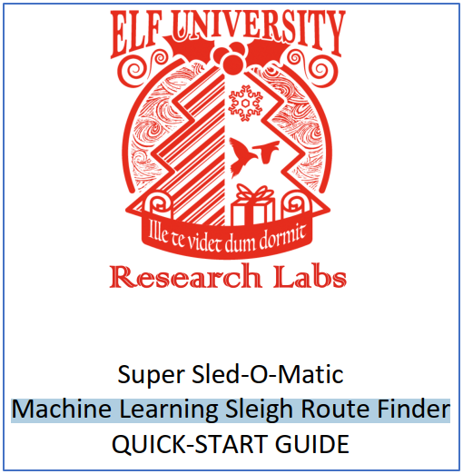

10) Recover Cleartext Document¶
Challenge¶
Difficulty: 5/5
The Elfscrow Crypto tool is a vital asset used at Elf University for encrypting SUPER SECRET documents. We can’t send you the source, but we do have debug symbols that you can use. Recover the plaintext content for this encrypted document. We know that it was encrypted on December 6, 2019, between 7pm and 9pm UTC. What is the middle line on the cover page? (Hint: it’s five words) For hints on achieving this objective, please visit the NetWars room and talk with Holly Evergreen.
Answer¶
Machine Learning Sleigh Route Finder
Solution¶
1. Discovery¶
The first part of the challenge involved reverse engineering the Elfscrow Crypto tool in order to find out how the encryption worked and determine if there were any potentially exploitable vulnerabilities. We used ghidra to reverse engineer the Elfscrow Crypto tool.
The second part of the challenge consisted of exploiting any vulnerabilities in the Elfscrow Crypto tool. In our solution we used Python to write a custom decryption tool (decrypt.py) that could decrypt the encrypted document (ElfUResearchLabsSuperSledOMaticQuickStartGuideV1.2.pdf.enc).
2. Solving the challenge¶
Reverse engineering the Elfscrow Crypto tool¶
We used ghidra to reverse engineer the Elfscrow Crypto tool. Ghidra is a free and open source reverse engineering tool developed by the National Security Agency.
We initially looked at the do_encrypt() function.
A quick glance through the decompile code for this function revealed that it was utilising Microsoft cryptographic libraries. This means that the encryption is probably using standard and well documented encryption algorithms. This can save a significant amount of effort because a lot of the code needed to decrypt something is probably available as a readymade library.
We also noticed a comment that indicated that DES-CBC encryption had been implemented. This is confirmed by analysing the keyBlob data structure. We confirmed that an 8-byte key was being used within a DESKEYBLOB data structure.
We then looked at the generate_key() function that was utilised within the do_encrypt() function. The generate_key() function is reproduced below:
1 2 3 4 5 6 7 8 9 10 11 12 13 14 15 16 17 18 19 20 21 22 23 24 | /* WARNING: Variable defined which should be unmapped: i */
void __thiscall ?generate_key@@YAXQAE@Z(void *this,uchar *buffer)
{
FILE *pFVar1;
int iVar2;
time_t tVar3;
char *_Format;
uint i;
_Format = "Our miniature elves are putting together random bits for your secret key!\n\n";
pFVar1 = __iob_func();
fprintf(pFVar1 + 2,_Format,this);
tVar3 = time((time_t *)0x0);
?super_secure_srand@@YAXH@Z((int)tVar3);
i = 0;
while (i < 8) {
iVar2 = super_secure_random();
buffer[i] = (uchar)iVar2;
i = i + 1;
}
return;
}
|
In the above function, the reference to time_t in line 15 is interesting. It refers to an arithmetic type that stores the number of seconds since January 1, 1970 (in other words, standard UNIX Epoch time).
The generate_key() function passes the current time into a super_secure_srand() function. The super_secure_srand() function is reproduced below:
1 2 3 4 5 6 7 8 9 10 11 12 13 14 | void __cdecl ?super_secure_srand@@YAXH@Z(int seed)
{
FILE *pFVar1;
char *_Format;
int iVar2;
_Format = "Seed = %d\n\n";
iVar2 = seed;
pFVar1 = __iob_func();
fprintf(pFVar1 + 2,_Format,iVar2);
DAT_0040602c = seed;
return;
}
|
The super_secure_srand() function doesn’t really do anything interesting except store the time in what is probably a globally accessible variable (DAT_0040602c).
Another function that is called by the generate_key() function is super_secure_random(). The super_secure_random() function is reproduced below:
1 2 3 4 5 6 7 8 | /* int __cdecl super_secure_random(void) */
int __cdecl super_secure_random(void)
{
DAT_0040602c = DAT_0040602c * 0x343fd + 0x269ec3;
return DAT_0040602c >> 0x10 & 0x7fff;
}
|
The super_secure_random() function is called 8 times in a loop contained in the generate_key() function. It performs some mathematical functions on DAT_0040602c which is actually the seed value that was passed to the super_secure_srand() function.
We could simply rewrite the mathematical operations within super_secure_random() as follows:
seed = seed * 0x343fd + 0x269ec3;
return (seed >> 0x10 & 0x7fff);
Each byte in the 8-byte encryption key generated by generate_key() is based on the return value from the super_secure_random() function. Before being stored, the value is converted from an integer to an unsigned character. Mathematically, this is the same performing a logical AND operation on the return value with 0xff.
In Python, the equivalent code to generate the key is as follows:
keyLength = 8 # DES
def generateKey(seed):
""" Generates a DES encryption key
Args:
seed: A seed value based on UNIX Epoch time
Returns:
A string containing the DES encryption key
"""
key = ''
for x in range(0,keyLength):
seed *= 0x343FD
seed += 0x269EC3
key += '{:02x}'.format((seed >> 0x10 & 0x7fff) & 0xff)
return key
The key that is generated by the Elfscrow Crypto tool is cryptographically insecure because the seed value is based on the time of encryption. If we know approximately when something was encrypted, we should be able to decrypt the file without having access to the original encryption key.
Before fully committing to the idea of creating a decryption tool based on guessing the encryption key, we decided to spend some time investigating the key escrow functionality of the Elfscrow Crypto tool to determine if it was easily exploitable.
Investigating the escrow functionality¶
We spent some time looking at the key escrow functionality provided by the Elfscrow Crypto tool and it’s accompanying web service.
There are two API methods available:
http://elfscrow.elfu.org/api/store - used to store a key
http://elfscrow.elfu.org/api/retrieve - used to retrieve a key
Note
There is also a secure version of these APIs available via the https protocol.
Storing the key in escrow¶
We can use the following PowerShell code to demonstrate how a key is stored in the web service. We place the key we want to store within a POST request (for example, bcc2f18e6f120584). The web service returns a unique (and probably random) GUID within the body of the http response.
$postParams = "bcc2f18e6f120584"
(Invoke-WebRequest -Uri http://elfscrow.elfu.org/api/store -Method POST -Body $postParams).RawContent
Retrieving a key from escrow¶
We can use the following PowerShell code to demonstrate how an encryption key is retrieved from the web service. The GUID value (for example, aea5a4b0-0b6e-4ed8-ba57-a322ba5706e3) is sent to the service in the POST request, and the key is sent back in the body of the http response.
$postParams = "aea5a4b0-0b6e-4ed8-ba57-a322ba5706e3"
(Invoke-WebRequest -Uri http://elfscrow.elfu.org/api/retrieve -Method POST -Body $postParams).RawContent
Storing the same encryption key twice resulting in two different GUID values. Based on this we decided that trying to retrieve the encryption key by guessing the GUID was not easily exploitable.
Our decryption tool¶
We wrote a decryption tool in Python to decrypt the encrypted document (decrypt.py). We have included this tool in our documentation repository (/source/o10-decryption/).
The tool makes use of the PyCryptodome library which contains a set of low-level cryptographic primitives.
Constructing the Python environment¶
To recreate a suitable Python virtual environment in which to run our decryption tool, please follow the following steps:
Note
We only tested our tool with Python 3.7.5 in a Windows 10 environment.
Download the documentation repository from the following link: https://github.com/alapornik/HHC2019.
Open a PowerShell prompt and navigate to the /source/o10-decryption/ folder
Enter the following command to create a virtual environment:
python -m venv .\.venvActivate the virtual environment by entering the following command:
.\.venv\Scripts\Activate.ps1Note
You can use the
deactivatecommand to deactivate the virtual environment.Install the needed modules using the following command:
pip install -r .\requirements.txt
Decoding the document¶
With the encrypted document (ElfUResearchLabsSuperSledOMaticQuickStartGuideV1.2.pdf.enc) in the same folder as our decryption tool, enter the following command:
python .\.decrypt.py
A progress bar will indicate the decryption progress. When the progress reaches approximately 67.4%, the tool will save a decrypted version of the document in the current folder.
The application will now iterate over each of the possible seed values until the file is decrypted.
Progress: [################################# ] 67.4%
Decrypted file with key: b5ad6a321240fbec
As shown below, if you open the decrypted document (Decoded.pdf) in a PDF reader the answer to the objective can be found on the cover page.
